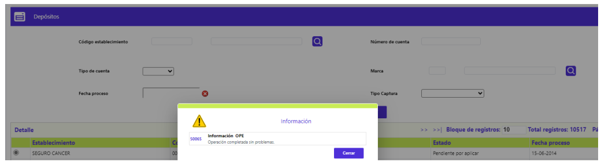
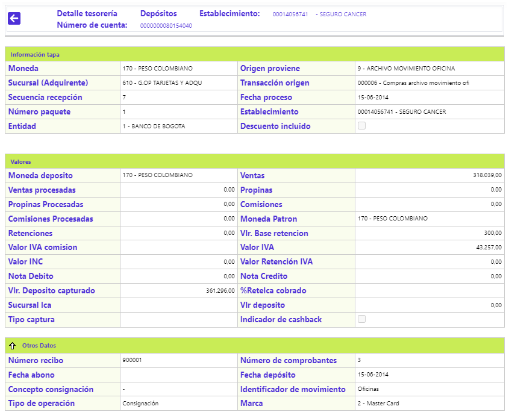
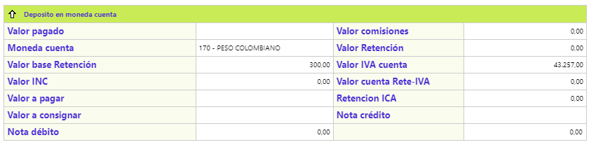
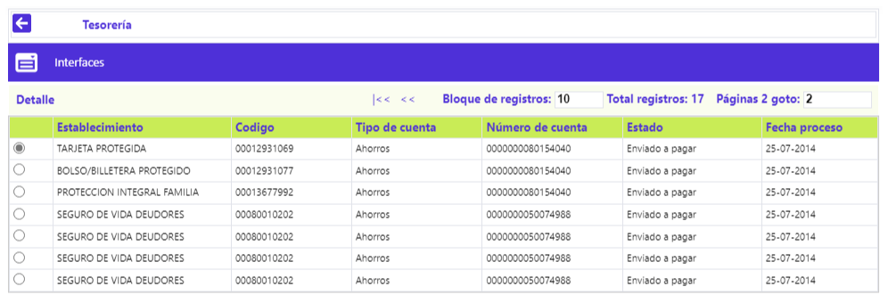
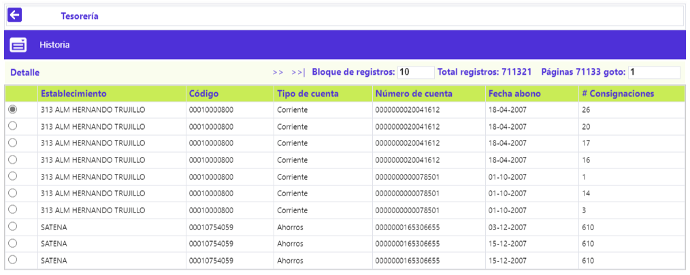

Tesorería
Al invocarse la opción el sistema despliega un formulario inicial que corresponde a un filtro, en el que, mediante una lista de valores, se debe seleccionar entre: Depósitos, Historia e Interfaces, la parte de la data de Tesorería que se desea consultar. Mediante esta función se permite la administración de las afectaciones a las cuentas corrientes o de ahorro de los establecimientos, producto de todas las posibles fuentes de movimiento transaccional que tengan relación o como destino las cuentas de depósito de los comercios.

Filtro: El formulario dispone del siguiente conjunto de criterios para realizar búsquedas puntuales, el cual aplica para los tres escenarios posibles: Depósitos pendientes por aplicar, Depósitos para los cuales ya se generó la interface para que sean afectadas las cuentas del establecimiento o Historia, datos de los depósitos que ya fueron aplicados definitivamente en las cuentas correspondientes:

|
Código establecimiento |
Campo que contiene lista de valores poblada en la opción Información de establecimientos en el que, se puede digitar o seleccionar, el código del comercio para el que se desea realizar la consulta de los depósitos que eventualmente tenga pendientes por aplicar, en proceso de afectación o ya en histórico. |
|
Número de cuenta |
Campo en el que se ingresa el número de la cuenta del establecimiento por la que se desea realizar la consulta de los depósitos que eventualmente tenga pendientes por aplicar, en proceso de afectación o ya en histórico. |
|
Tipo de cuenta |
Campo que posee lista de valores tipo combo, de la que puede seleccionarse entre: Ahorros o Corriente, el criterio de consulta. |
|
Marca |
Corresponde a la franquicia a la cual pertenece la consignación del establecimiento por la que se desea realizar la consulta de los depósitos que eventualmente tenga pendientes por aplicar, en proceso de afectación o ya en histórico. |
|
Fecha proceso |
Campo que mediante la funcionalidad de un calendario permite realizar consultas por fecha proceso, en formato DD-MM-AAAA, admite cualquier fecha válida. |
|
Tipo Captura |
Campo que posee lista de valores tipo combo, con los distintos tipos de captura habilitados por las franquicias, los cuales sirven de criterio realizar la consulta de los depósitos que eventualmente tenga pendientes por aplicar, en proceso de afectación o ya en histórico. |
Depositos: Formulario que al invocarse, refleja, en el bloque inferior, del primer paso del wizard, todos los registros del movimiento proveniente de distintos orígenes de transacciones, que se encuentran pendientes por gestionar para ser aplicados a las cuentas de los establecimientos.

El formulario cuenta con el enlace Detalle, así como con tres botones especiales: Aplicar todo, Seleccionar o Deseleccionar todo.
Descripción de campos - Depósitos
|
Establecimiento |
Campo que ilustra el nombre del comercio para el que aparece el depósito pendiente por aplicar. |
|
Código |
Campo que ilustra el nombre del establecimiento para el que aparece el depósito pendiente por aplicar. |
|
Tipo de cuenta |
Campo que muestra el tipo de cuenta de depósitos, Ahorros o Corriente, asociada al establecimiento. |
|
Número de cuenta |
Campo que muestra el número de cuenta de depósitos asociada al comercio. |
|
Marca |
Corresponde a la franquicia a la cual pertenece la consignación del establecimiento por la que se desea realizar la consulta de los depósitos que eventualmente tenga pendientes por aplicar, en proceso de afectación o ya en histórico. |
|
Estado |
Campo que indica si el depósito se encuentra Pendiente por aplicar o Listo para pagar, acorde con el tiempo transcurrido o el origen del movimiento. |
|
Fecha proceso |
Campo que mediante la funcionalidad de un calendario permite realizar consultas por fecha proceso, en formato DD-MM-AAAA, admite cualquier fecha válida. |
|
Seleccionar |
Campo tipo checkbox, en el que el funcionario responsable debe marcar manualmente o mediante el botón especial, aquellos depósitos a gestionar para generar la interface, sin esperar a que se ejecuten los procesos de la automatización, los cuales levantan todos los registros que se encuentran en este formulario. |
Existen dos maneras de evolucionar la aplicación de los registros de Depósitos, una manual, para avanzar al segundo paso del wizard, se debe marcar o seleccionar al menos un registro, y utilizar el botón ubicado en la parte inferior derecha, la otra, masiva, consiste en la ejecución de los procesos automatizados, durante el día o dentro de los procesos masivos del cierre diario:

Una vez allí, al activar el botón especial Aplicar todo, se evidencia la reducción del total de registros, los mismos que se deben aumentar en Interfaces:

Detalle: Se ilustra el contenido del formulario, en el cual ninguno de los datos es editable. Dado que la estructura del mismo aplica para los tres momentos, esto es, Depósitos, Interfaces e Histórico, solo se incluye una única vez.


Interfaces: Formulario que al invocarse, refleja, en el bloque inferior, todos los registros provenientes del formulario Depósitos. Las tres principales diferencias, con Depósitos, son: no existe un wizard, todo está contenido en el único formulario, en datos, el Estado ahora es Enviado a pagar y que no existe el checkbox Seleccionar. Una vez se ejecuten los procesos automáticos que generan la interface y, es enviada al core, este es el responsable porque efectivamente se reflejen en las cuentas de los establecimientos, los montos indicados en las interfaces. La descripción de los campos del bloque inferior corresponde a la misma realizada para el bloque de Depósitos, por lo que no se repite en este punto.

Historia: Formulario que al invocarse, refleja, en el bloque inferior, los registros provenientes del formulario Interface, después de ejecutarse los procesos automáticos responsables por ese traslado. Las dos principales diferencias, respecto de Interfaces, son: Fecha abono y # Consignaciones.

|
Fecha abono |
Campo que en formato DD-MM-AAAA, ilustra la fecha en la que se aplica efectivamente el abono en la cuenta del establecimiento. |
|
# Consignaciones |
Campo que indica el número de recibo con el cual se efectuó la consignación |